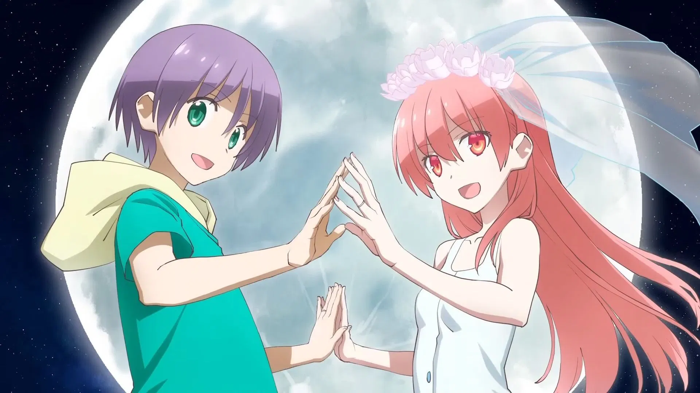
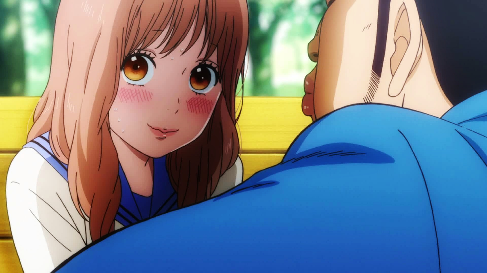
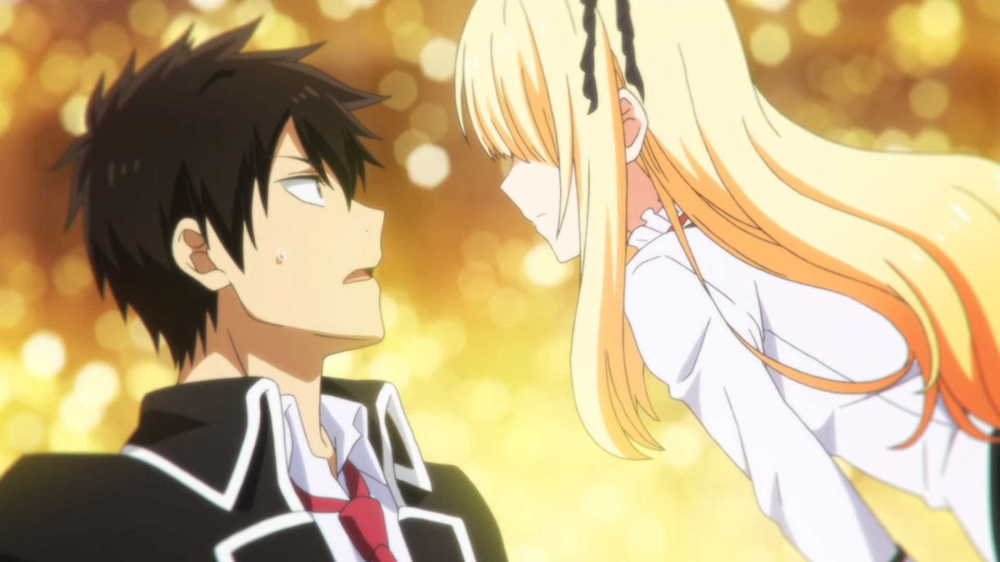
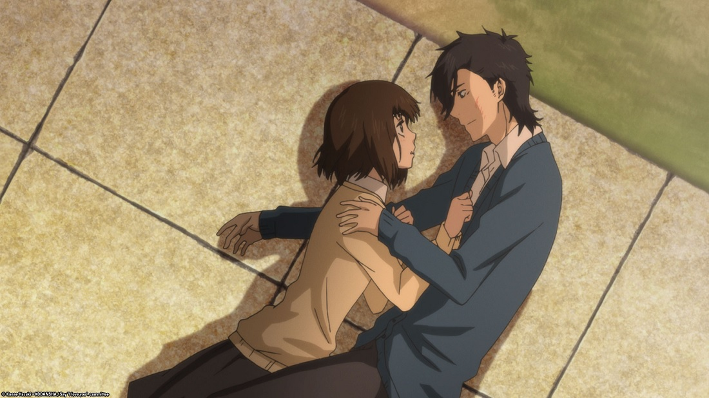
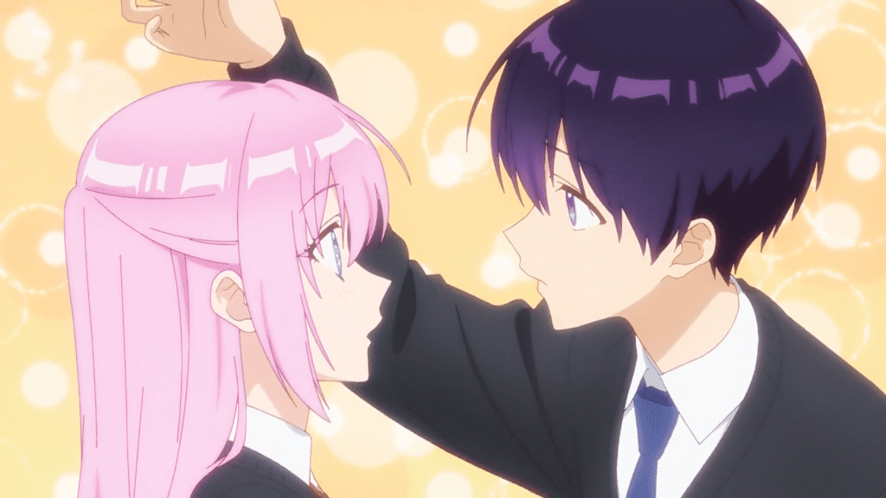
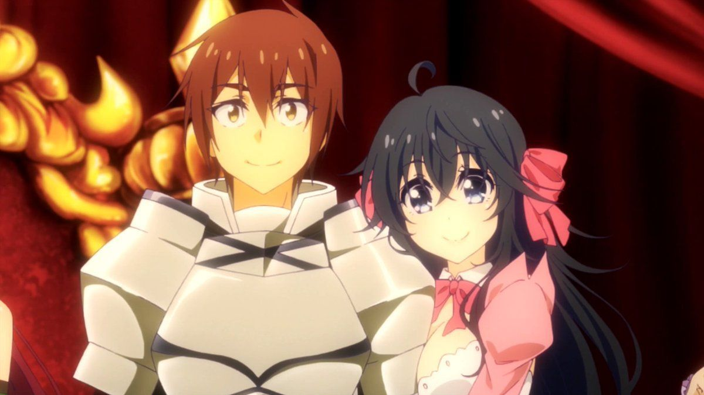
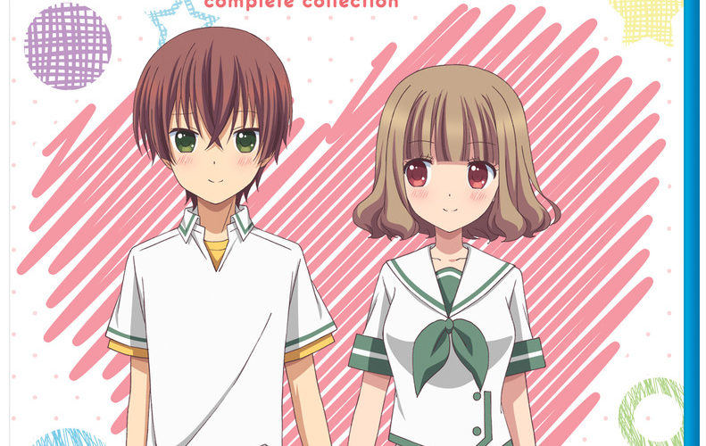
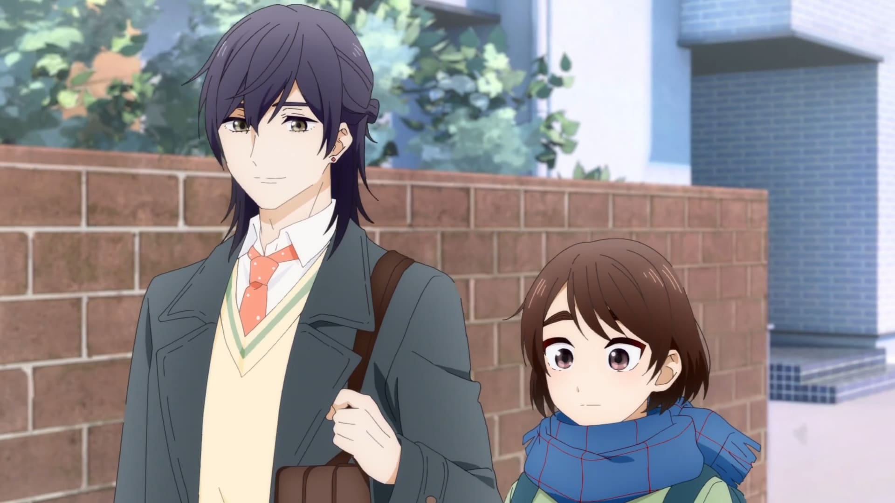
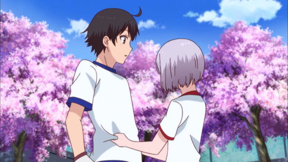
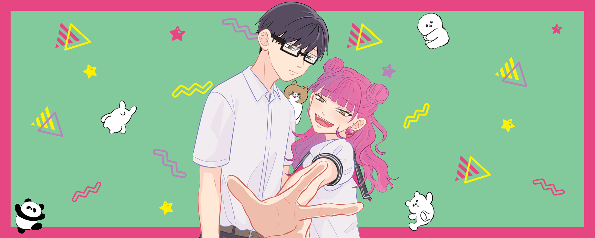

SMASH Senpai
Top 10 Romance Anime Where the Couple Gets Together in Episode 1 (No More Waiting!)
Not everyone enjoys slow-burn romance. Sometimes, you just want an anime where the couple actually gets together without dragging things out for an entire season.
These romance anime skip the endless misunderstandings, prolonged tension, and “will-they-won’t-they” clichés. Instead, they establish the relationship right from episode one and focus on what really matters — growing together.
When a couple gets together early, the story shifts from chasing love to maintaining it. That means real dates, emotional challenges, jealousy, intimacy, and genuine relationship development.
From wholesome newlyweds to awkward first loves and unlikely pairings, these anime prove that romance doesn’t need to wait to be satisfying.
These are the Top 10 Romance Anime where the couple gets together in episode one — no stalling, no bait, just straight into love.
Sponsored
#1 Tonikawa: Over the Moon for You
Tonikawa: Over the Moon for You completely flips the usual romance anime formula. Instead of endless buildup, misunderstandings, and delayed confessions, this series gets straight to the point. Nasa Yuzaki meets Tsukasa in a life-changing moment, and by the end of the very first episode, they’re not just dating — they’re married.
That immediate commitment sets the tone for everything that follows. Tonikawa isn’t about chasing love. It’s about living with it. The anime focuses on the quiet, everyday moments of married life — sharing meals, learning each other’s habits, and navigating intimacy with equal parts nervousness and warmth.
What makes the romance feel special is how gentle it is. There’s no forced drama. No unnecessary love triangles. Instead, the relationship grows naturally through small interactions and sincere affection. Tsukasa’s calm confidence balances Nasa’s awkward excitement, creating a dynamic that feels comforting rather than overwhelming.
Even though the couple is together immediately, the anime never feels rushed. Emotional milestones still matter. First hand-holding. First arguments. First moments of vulnerability. Love isn’t treated as an end goal — it’s the starting point.
Tonikawa proves that romance anime don’t need delay to be engaging. Sometimes, watching a couple grow together from the very beginning is far more satisfying.
- Episode count: 24+ (multiple seasons)
- Genre: Romance, Slice of Life, Comedy
- Known for: Immediate marriage, wholesome vibes
- Core theme: Love as a shared journey

play anime smash or pass here (not sponsored)
SMASH SENPAI – Smash or Pass#2 My Love Story!! (Ore Monogatari!!)
My Love Story!! is a romance anime that immediately stands out by rejecting shallow beauty standards. Takeo Gouda, a massive, intimidating-looking guy with a heart of pure gold, has spent his entire life watching girls fall for his best friend instead. So when someone finally loves him back, it feels genuinely earned.
Takeo and Rinko Yamato officially become a couple very early in the series, skipping the usual romantic delays. From that point onward, the anime focuses on nurturing love rather than chasing it. Their relationship is sweet, awkward, and refreshingly sincere.
What makes this anime special is how emotionally safe it feels. There’s no manipulation. No cruel misunderstandings. Both characters are kind to each other, openly expressive, and deeply considerate. Even conflicts are handled through communication instead of needless drama.
The humor comes naturally from Takeo’s over-the-top reactions and Yamato’s soft-spoken devotion. Their affection isn’t flashy, but it’s constant. Every episode reinforces how mutual respect and support form the foundation of real love.
My Love Story!! is proof that romance doesn’t need angst to be powerful. Sometimes, pure kindness and emotional honesty are more than enough to make a relationship unforgettable.
- Episode count: 24
- Genre: Romance, Comedy, Slice of Life
- Known for: Wholesome energy, lovable leads
- Core theme: Love beyond appearances
Sponsored
#3 Boarding School Juliet
Boarding School Juliet takes the classic Romeo and Juliet concept and turns it into a high-energy, modern romcom. At an elite boarding school divided into rival factions, Romio Inuzuka and Juliet Persia are supposed to be enemies. Instead, they confess their love in the very first episode.
Their relationship begins immediately, but staying together is the real challenge. Because of school politics, rival dormitories, and constant surveillance, their romance must remain a secret. This turns every interaction into a high-stakes balancing act between public hostility and private affection.
What makes the anime compelling is how it balances comedy and tension. Romio’s loud, reckless personality contrasts perfectly with Juliet’s composed elegance. Despite the chaos, their feelings never waver. They fight not just for love, but for a future where they don’t have to hide.
The series uses its early relationship to explore trust, loyalty, and sacrifice. Instead of asking “will they get together,” the story asks “can they stay together?” That shift keeps the romance engaging from start to finish.
Boarding School Juliet proves that love declared early can still feel exciting, emotional, and full of stakes when the world itself stands in the way.
- Episode count: 12
- Genre: Romance, Comedy, School
- Known for: Secret dating, rival factions
- Core theme: Love against social division
#4 Say “I Love You”
Say “I Love You” is one of the most honest portrayals of early romance in anime. Unlike many romcoms that delay confessions for entire seasons, this series establishes the relationship almost immediately and focuses on what happens after.
Mei Tachibana is a socially withdrawn girl who believes connections only lead to pain. Her worldview changes when she meets Yamato Kurosawa, a popular and surprisingly sincere boy. Their bond forms quickly, and instead of dragging out misunderstandings, the anime commits to them becoming a couple early in the story.
What makes Say “I Love You” stand out is its realism. Dating doesn’t magically solve everything. Mei struggles with jealousy, insecurity, and fear of being abandoned. Yamato must learn how to support someone who isn’t emotionally expressive. Love becomes something they actively learn, not something that just “works.”
The anime explores themes many romance series avoid — emotional dependency, boundaries, and self-worth. The early relationship allows the story to dig deeper into personal growth rather than chasing a confession payoff.
Say “I Love You” proves that romance doesn’t end at “I love you.” Sometimes, that’s where the real story begins.
- Episode count: 13
- Genre: Romance, Drama, Slice of Life
- Known for: Realistic relationship struggles
- Core theme: Learning how to love responsibly
Sponsored
#5 Shikimori’s Not Just a Cutie
Shikimori’s Not Just a Cutie flips the traditional romcom formula on its head. The couple is already together from the very first episode, and the anime has zero interest in playing confession games.
Izumi is kind, gentle, and cursed with legendary bad luck. Shikimori, his girlfriend, balances adorable sweetness with sudden bursts of cool, protective energy. Their relationship is stable, affectionate, and refreshingly healthy.
Instead of drama-driven romance, the series focuses on everyday moments — holding hands, walking home, protecting each other, and quietly supporting one another. The romance exists in shared experiences, not dramatic twists.
What truly sells Shikimori is emotional reassurance. Izumi is never mocked for being soft. Shikimori never has to hide her strength. Their love is built on acceptance, not correction.
This anime is comfort food. It’s proof that romance anime doesn’t need tension to be engaging — sometimes, stability is the fantasy.
- Episode count: 12
- Genre: Romance, Slice of Life, Comedy
- Known for: Established couple, wholesome vibes
- Core theme: Love as mutual support
#6 Netoge: And You Thought There Is Never a Girl Online
Netoge blends gaming culture with early romance in a way that feels surprisingly sincere. The couple’s relationship begins almost immediately, thanks to an in-game marriage that spills into real life.
Hideki Nishimura is traumatized after being rejected online. Ako Tamaki, however, takes virtual relationships very seriously — perhaps too seriously. When they meet in real life, Ako refuses to accept that their marriage was “just a game.”
What makes Netoge unique is how quickly it commits. There’s no prolonged denial phase. The characters openly explore what it means to transition from online affection to real emotional responsibility.
The anime balances comedy with genuine moments of vulnerability. Ako’s social anxiety, her difficulty separating fantasy from reality, and Nishimura’s cautious optimism give their relationship emotional weight beneath the jokes.
Netoge shows that modern romance can begin anywhere — even in an MMO — as long as the emotions are real. It’s chaotic, awkward, and unexpectedly heartfelt.
- Episode count: 12
- Genre: Romance, Comedy, Gaming
- Known for: Early couple, MMO setting
- Core theme: Online bonds becoming real
Sponsored
#7 Momokuri
Momokuri is a romance anime that wastes absolutely no time. The couple officially starts dating in the very first episode, and the entire series is dedicated to exploring the awkward, nervous, heart-racing moments that come after.
Yuki Kurihara is sweet, shy, and secretly obsessed with her boyfriend Momo. Her affection borders on overwhelming, but it’s never portrayed as malicious. Momo, on the other hand, is kind, patient, and genuinely cares about her, even when her behavior gets intense.
What makes Momokuri charming is its honesty. First relationships are awkward. People overthink. Emotions feel bigger than they should. The anime embraces these feelings instead of smoothing them over. Love here isn’t glamorous — it’s clumsy and nervous.
There’s no love triangle, no dragged-out misunderstandings, and no will-they-won’t-they tension. The focus stays firmly on emotional growth, communication, and learning boundaries.
Momokuri is perfect for viewers who want pure, wholesome romance without drama. It proves that a relationship doesn’t need conflict to be engaging — sincerity is enough.
- Episode count: 26 (short episodes)
- Genre: Romance, Slice of Life, Comedy
- Known for: Early dating, wholesome tone
- Core theme: Navigating first love honestly
#8 A Condition Called Love
A Condition Called Love takes a bold approach to early romance. The couple begins dating almost immediately, but the anime makes it clear — this is not a fairy-tale love story.
Hananoi is intense, emotionally overwhelming, and deeply attached. Hotaru, his girlfriend, enters the relationship without fully understanding what romantic love means. This imbalance becomes the emotional backbone of the series.
Instead of celebrating obsession, the anime examines it. Hananoi’s behavior often crosses boundaries, forcing both characters to confront unhealthy expectations. The early relationship setup allows the story to focus on emotional responsibility rather than romantic buildup.
What makes this anime stand out is its willingness to portray discomfort. Love isn’t always warm. Sometimes, it’s confusing, suffocating, and painful. The series treats these themes with seriousness rather than comedy.
A Condition Called Love is not light viewing, but it’s honest. It explores how love should be learned, not assumed.
- Episode count: 12
- Genre: Romance, Drama
- Known for: Psychological depth, early dating
- Core theme: Healthy vs unhealthy love
#9 My Girlfriend Is Shobitch
My Girlfriend Is Shobitch is unapologetically ridiculous. The couple starts dating almost instantly, and the anime has zero interest in subtlety. This is romance played entirely for comedy.
Haruka Shinozaki is innocent, awkward, and easily flustered. His girlfriend Akiho, however, takes everything literally — especially anything remotely suggestive. The result is a constant barrage of misunderstandings and absurd situations.
The early relationship removes romantic tension, replacing it with situational humor. Every episode revolves around how little these two understand about relationships, despite technically being a couple.
While the comedy is crude, the anime never becomes mean-spirited. Both characters are earnest, even when they’re clueless. The humor comes from innocence, not malice.
My Girlfriend Is Shobitch isn’t deep or emotional, but it knows exactly what it is. For viewers who want fast romance and dumb fun, it delivers without hesitation.
- Episode count: 10 + OVA
- Genre: Romantic Comedy, Ecchi
- Known for: Early dating, crude humor
- Core theme: Innocence meets misunderstanding
#10 You and Me Are Polar Opposites
You and Me Are Polar Opposites is a refreshing take on early romance. The confession happens quickly, but instead of ending the story, it sets the stage for emotional exploration.
Suzuki is loud, energetic, and openly emotional. Tani is quiet, reserved, and deeply introspective. Their personalities clash constantly, but never in a toxic way. Their relationship forms through honest communication rather than dramatic coincidence.
What makes this series special is its realism. Dating doesn’t instantly solve insecurity or self-doubt. Both characters struggle with how they’re perceived and how to support someone so different from themselves.
The anime avoids unnecessary drama. Problems are addressed through conversation, not misunderstandings. Emotional maturity becomes the real focus of the story.
You and Me Are Polar Opposites proves that opposites don’t just attract — they grow together. It’s modern, sincere, and quietly powerful.
- Episode count: Ongoing / Adaptation announced
- Genre: Romance, Slice of Life
- Known for: Emotional realism, fast confession
- Core theme: Love through communication
Play Smash or Pass on SMASH Senpai.
 PLAY SMASH OR PASS
PLAY SMASH OR PASS